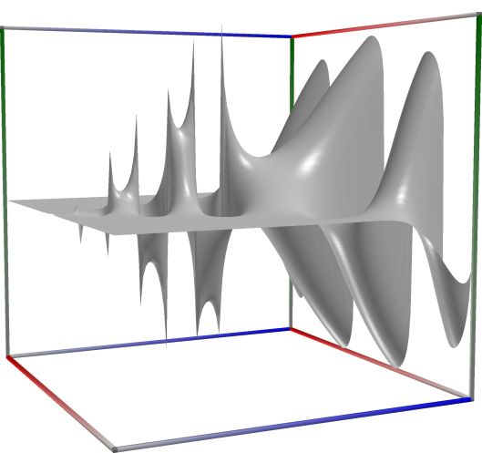
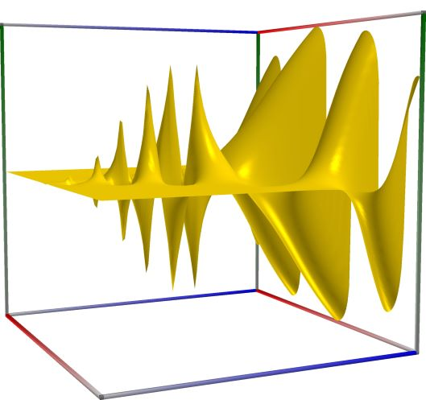
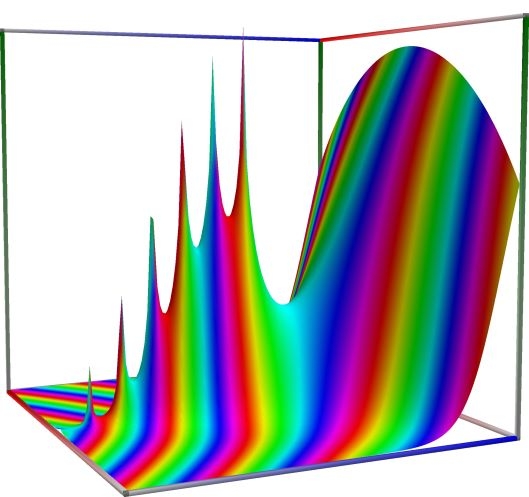
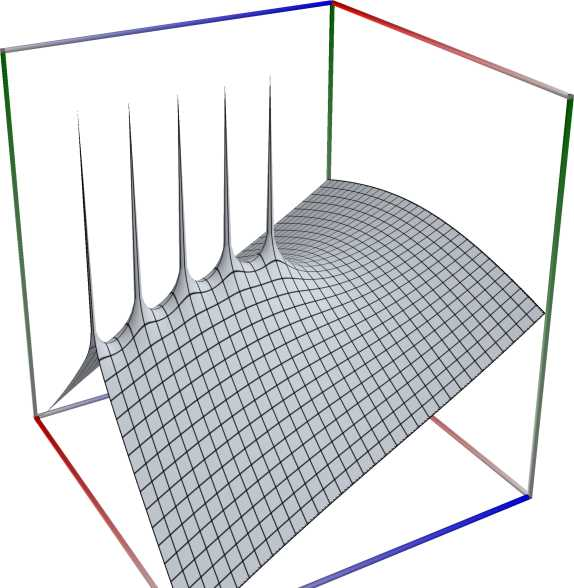
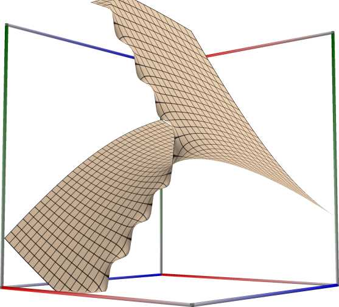
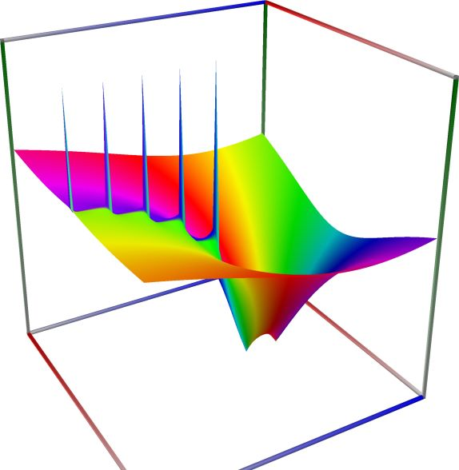
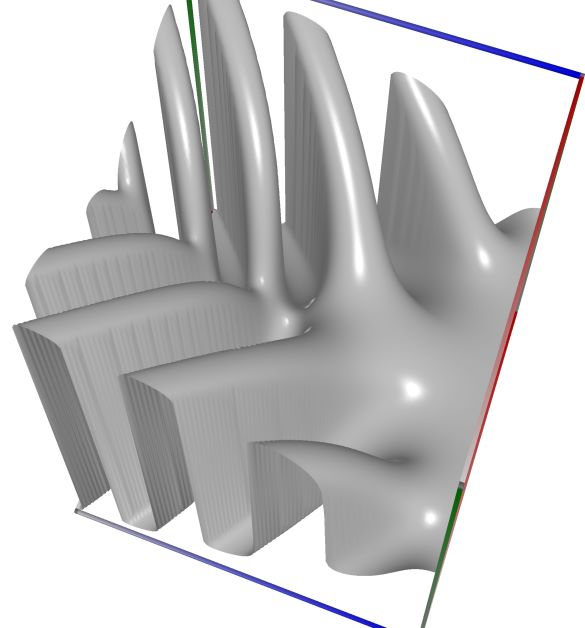
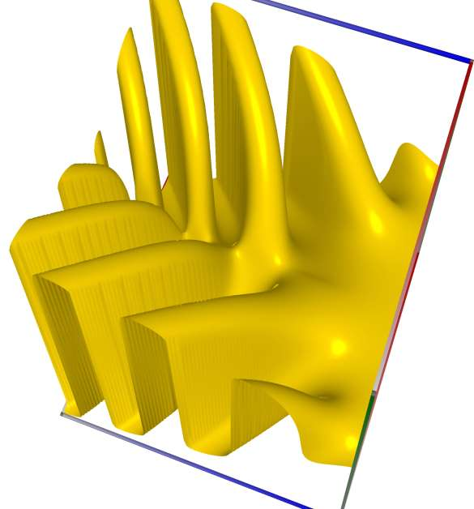
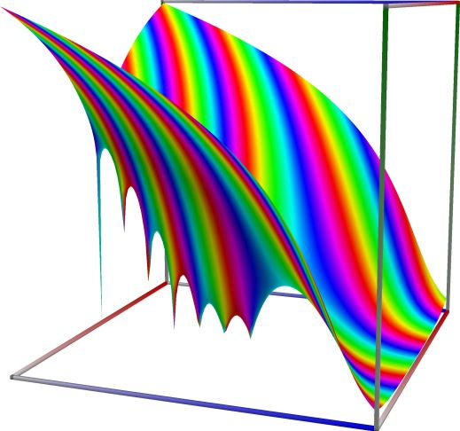

Factorials, Gamma and related functions#
Gamma function, \(\Gamma(x)\)#
- ctx.gamma(x)#
where
ctxismath53,mathc53,ctxboost,ctxflint.Returns the gamma function \(\displaystyle \Gamma(x) = \int_0^{\infty} t^{x-1} e^{-t} \, \mathrm{d}t\), for any real or complex \(x\) with \(\Re(x) > 0\) and for \(\Re(x) < 0\) by analytic continuation.
See also Wikipedia [1256], MathWorld [883], NIST [22], BoostMath [101], Ehrhardt [297] (3.5.1.1), Ehrhardt [297] (4.2.38), Flint [738], Flint [728], Mpmath [589].

\(\quad\)
\(\quad\)
3D wpf plot: real part (left figure), imaginary part (middle figure) and absolute value with color-coded phase (right figure) of the complex sine function \(z = \sin(x + iy)\), with \(-6 \le x \le 6\) (blue axis), \(-6 \le y \le 6\) (red axis), \(-10 \le z \le 10\) (green axis). Function values are loglog-transformed.
An example with real input:
>>> from xlcalcnet import * >>> x = -5.1; dps = 90 >>> for ctx in gui.ctxlist_real: print(ctx.fmtname + ': ' + ctx.fmt(ctx.gamma(x))) fpm: 0.0713672772338105 mpm: 0.0713672772338102013261365137797375388387133361837385671035988940827839634452177072190160181 dpm: 0.0713672772338102013261365137797375388387133361837385671035988940827839634452177072190160183 ipm: [0.071367277233810201326136513779737538838713336183738567103598894082783963445217707219016018056609, 0.071367277233810201326136513779737538838713336183738567103598894082783963445217707219016018977064] gpm: 0.071367277233810201326136513779737538838713336183738567103598894082783963445217707219016018118 apm: [0.07136727723381020132613651377973753883871333618373856710359889408278396344521770721901602 +/- 2.03e-90] math53: 0.0713672772338105 sreal: 0.07136736 dreal: 0.0713672772338105 ereal: 0.071367277233810201399 qreal: 0.0713672772338102013261365137797378 oreal: 0.071367277233810201326136513779737538838713336183738567103598894082783981 mreal: 0.0713672772338102013261365137797375388387133361837385671035988940827839634452177072190160189 sflint: 0.07136735 dflint: 0.0713672772338105 eflint: 0.071367277233810201399 qflint: 0.0713672772338102013261365137797378 oflint: 0.071367277233810201326136513779737538838713336183738567103598894082783975 mflint: 0.0713672772338102013261365137797375388387133361837385671035988940827839634452177072190160189 aflint: [0.071367277233810201326136513779737538838713336183738567103598894082783963445217707219016019 +/- 9.34e-91]
An example with complex input, using C#-style formatting for complex numbers for the result
>>> from xlcalcnet import * >>> x = -5.1+2j; gui.setdps(50) >>> for ctx in [fpm, mpm, cmath53]: print(ctx.fmtname + ': ' + ctx.fmt(ctx.gamma(x))) fpm: (3.86562806138907E-06, -0.000116714602754772) mpm: (0.0000038656280613889497689980764013101795083212306461018, -0.00011671460275477223994273145381444961434930209324275) cmath53: (3.86562806138899E-06, -0.000116714602754773)
An example with the same complex input as above, showing only the real part of the result:
>>> from xlcalcnet import * >>> x = -5.1+2j; gui.setdps(90) >>> for ctx in gui.ctxlist_noboost_cplx: print(ctx.fmtname + ': ' + ctx.realctx.fmt(ctx.real(ctx.gamma(x)))) fpm: 3.86562806138907E-06 mpm: 0.00000386562806138894976899807640131017950832123064610032167739289451557965923335749816426424533 dpm: 0.0000038656280613889497689980764013101795083212306461003216773928945155796592333574981642642454 ipm: [0.0000038656280613889497689980764013101795083212306461003216773928945155796592333574981642642453346176, 0.0000038656280613889497689980764013101795083212306461003216773928945155796592333574981642642456632713] gpm: 3.8656280613889497689980764013101795083212306461003216773928945155796592333574981642642453299e-06 apm: [3.865628061388949768998076401310179508321230646100321677392894515579659233357498164264246e-6 +/- 8.82e-94] cmath53: 3.86562806138899E-06 sflintc: 3.86566E-06 dflintc: 3.86562806138907E-06 eflintc: 3.8656280613889497978e-06 qflintc: 3.86562806138894976899807640131028e-06 oflintc: 3.8656280613889497689980764013101795083212306461003216773928945155796639e-06 mflintc: 3.86562806138894976899807640131017950832123064610032167739289451557965923335749816426424566E-06 aflintc: [3.865628061388949768998076401310179508321230646100321677392894515579659233357498164264246e-6 +/- 7.80e-94]
An example with the same complex input as above, showing only the imaginary part of the result:
>>> from xlcalcnet import * >>> x = -5.1+2j; gui.setdps(90) >>> for ctx in gui.ctxlist_noboost_cplx: print(ctx.fmtname + ': ' + ctx.realctx.fmt(ctx.imag(ctx.gamma(x)))) fpm: -0.000116714602754772 mpm: -0.00011671460275477223994273145381444961434930209324274935368337454470220789359993254708373912 dpm: -0.00011671460275477223994273145381444961434930209324274935368337454470220789359993254708373912 ipm: [-0.00011671460275477223994273145381444961434930209324274935368337454470220789359993254708373912000318, -0.00011671460275477223994273145381444961434930209324274935368337454470220789359993254708373911977846] gpm: -0.00011671460275477223994273145381444961434930209324274935368337454470220789359993254708373912 apm: [-0.000116714602754772239942731453814449614349302093242749353683374544702207893599932547083739120 +/- 5.13e-94] cmath53: -0.000116714602754773 sflintc: -0.0001167146 dflintc: -0.000116714602754772 eflintc: -0.00011671460275477223996 qflintc: -0.00011671460275477223994273145381445 oflintc: -0.0001167146027547722399427314538144496143493020932427493536833745447022079 mflintc: -0.00011671460275477223994273145381444961434930209324274935368337454470220789359993254708373912 aflintc: [-0.000116714602754772239942731453814449614349302093242749353683374544702207893599932547083739120 +/- 5.27e-94]


Auxiliary function \(\Gamma(x+1)-1\)#
- ctx.gamma1pm1(z)#
where
ctxismath53,ctxcpp,ctxboostorctxflint.Returns \(\Gamma(1 + x) - 1\), accurate also for \(x\) near \(0\).
See also Wikipedia [1256], MathWorld [883], NIST [22], BoostMath [101], Ehrhardt [297] (3.5.1.2)., Flint [738], Flint [728].
An example with real input:
>>> from xlcalcnet import * >>> x = -5.1; dps = 90 >>> for ctx in gui.ctxlist_real: print(ctx.fmtname + ': ' + ctx.fmt(ctx.gamma1pm1(x))) fpm: -1.36397311389243 mpm: -1.36397311389243202676329622027666144807743801453706669222835435982219821357061030681698169 dpm: -1.36397311389243202676329622027666144807743801453706669222835435982219821357061030681698169 ipm: [-1.3639731138924320267632962202766614480774380145370666922283543598221982135706103068169816968567, -1.3639731138924320267632962202766614480774380145370666922283543598221982135706103068169816919476] gpm: -1.3639731138924320267632962202766614480774380145370666922283543598221982135706103068169816924 apm: [-1.36397311389243202676329622027666144807743801453706669222835435982219821357061030681698170 +/- 8.25e-90] math53: -1.36397311389243 sreal: -1.363973 dreal: -1.36397311389243 ereal: -1.3639731138924320274 qreal: -1.36397311389243202676329622027666 oreal: -1.3639731138924320267632962202766614480774380145370666922283543598221983 mreal: -1.3639731138924320267632962202766614480774380145370666922283543598221982135706103068169817 sflint: -1.363973 dflint: -1.36397311389243 eflint: -1.3639731138924320271 qflint: -1.36397311389243202676329622027666 oflint: -1.3639731138924320267632962202766614480774380145370666922283543598221982 mflint: -1.3639731138924320267632962202766614480774380145370666922283543598221982135706103068169817 aflint: [-1.36397311389243202676329622027666144807743801453706669222835435982219821357061030681698170 +/- 8.76e-90]
An example with complex input, using C#-style formatting for complex numbers for the result
>>> from xlcalcnet import * >>> x = -5.1+2j; gui.setdps(50) >>> for ctx in [fpm, mpm, cmath53]: print(ctx.fmtname + ': ' + ctx.fmt(ctx.gamma1pm1(x))) fpm: (-0.999786285497604, 0.000602975730172117) mpm: (-0.99978628549760353916393642728201778268679383408981, 0.00060297573017211632324592656725631339219808313683023) cmath53: (-0.999786285497604, 0.000602975730172118)
An example with the same complex input as above, showing only the real part of the result:
>>> from xlcalcnet import * >>> x = -5.1+2j; gui.setdps(90) >>> for ctx in gui.ctxlist_noboost_cplx: print(ctx.fmtname + ': ' + ctx.realctx.fmt(ctx.real(ctx.gamma1pm1(x)))) fpm: -0.999786285497604 mpm: -0.999786285497603539163936427282017782686793834089809612933187954672625040474890258146470269 dpm: -0.999786285497603539163936427282017782686793834089809612933187954672625040474890258146470269 ipm: [-0.99978628549760353916393642728201778268679383408980961293318795467262504047489025814647026951017, -0.99978628549760353916393642728201778268679383408980961293318795467262504047489025814647026938744] gpm: -0.99978628549760353916393642728201778268679383408980961293318795467262504047489025814647026939 apm: [-0.999786285497603539163936427282017782686793834089809612933187954672625040474890258146470269 +/- 5.15e-91] cmath53: -0.999786285497604 sflintc: -0.9997863 dflintc: -0.999786285497604 eflintc: -0.99978628549760353915 qflintc: -0.999786285497603539163936427282018 oflintc: -0.99978628549760353916393642728201778268679383408980961293318795467262504 mflintc: -0.999786285497603539163936427282017782686793834089809612933187954672625040474890258146470269 aflintc: [-0.999786285497603539163936427282017782686793834089809612933187954672625040474890258146470269 +/- 8.82e-91]
An example with the same complex input as above, showing only the imaginary part of the result:
>>> from xlcalcnet import * >>> x = -5.1+2j; gui.setdps(90) >>> for ctx in gui.ctxlist_noboost_cplx: print(ctx.fmtname + ': ' + ctx.realctx.fmt(ctx.imag(ctx.gamma1pm1(x)))) fpm: 0.000602975730172117 mpm: 0.000602975730172116323245926567256313392198083136830222347139995967012419575826370986455598002 dpm: 0.000602975730172116323245926567256313392198083136830222347139995967012419575826370986455598002 ipm: [0.00060297573017211632324592656725631339219808313683022234713999596701241957582637098645559800160306, 0.00060297573017211632324592656725631339219808313683022234713999596701241957582637098645559800316112] gpm: 0.00060297573017211632324592656725631339219808313683022234713999596701241957582637098645559800196 apm: [0.00060297573017211632324592656725631339219808313683022234713999596701241957582637098645559800 +/- 7.03e-93] cmath53: 0.000602975730172118 sflintc: 0.0006029759 dflintc: 0.000602975730172116 eflintc: 0.00060297573017211632338 qflintc: 0.000602975730172116323245926567256314 oflintc: 0.00060297573017211632324592656725631339219808313683022234713999596701241958 mflintc: 0.000602975730172116323245926567256313392198083136830222347139995967012419575826370986455598003 aflintc: [0.00060297573017211632324592656725631339219808313683022234713999596701241957582637098645559800 +/- 7.13e-93]
Log-gamma function, \(\log\Gamma(x)\)#
- ctx.lgamma(x)#
where
ctxismath53,mathc53,ctxboost,ctxflint.Returns the principal branch of the log-gamma function, \(\log|\Gamma(x)|\) for \(x \ne 0, -1, -2, \ldots\). If \(x<0\), the logarithmic form of the reflection formula is used.
See also: https://en.wikipedia.org/wiki/Gamma_function#Log-gamma_function
See also: https://mathworld.wolfram.com/LogGammaFunction.html
See also Wikipedia [1267], MathWorld [891], BoostMath [102], Ehrhardt [297] (3.5.1.5), Ehrhardt [297] (4.2.43), Flint [738], Flint [728], Mpmath [595].
Unlike \(\log(\Gamma(z))\), which has infinitely many complex branch cuts, the principal log-gamma function only has a single branch cut along the negative half-axis. The principal branch continuously matches the asymptotic Stirling expansion
\[\log \Gamma(z) \sim \frac{\log(2 \pi)}{2} + \left(z-\frac{1}{2}\right) \log(z) - z + O(z^{-1}).\]The real parts of both functions agree, but their imaginary parts generally differ by \(2 n \pi\) for some \(n \in \mathbb{Z}\). They coincide for \(z \in \mathbb{R}, z > 0\).

\(\quad\)
\(\quad\)
3D wpf plot: real part (left figure), imaginary part (middle figure) and absolute value with color-coded phase (right figure) of the complex sine function \(z = \sin(x + iy)\), with \(-6 \le x \le 6\) (blue axis), \(-6 \le y \le 6\) (red axis), \(-10 \le z \le 10\) (green axis). Function values are loglog-transformed.
An example with real input:
>>> from xlcalcnet import * >>> x = -5.1; dps = 90 >>> for ctx in gui.ctxlist_real: print(ctx.fmtname + ': ' + ctx.fmt(ctx.lgamma(x))) fpm: 3.32976416847522 mpm: 3.32976416847522513013821362885727361354275132037301030566373350068161506278982315503093034 dpm: 3.32976416847522513013821362885727361354275132037301030566373350068161506278982315503093034 ipm: [3.3297641684752251301382136288572736135427513203730103056637335006816150627898231550309303395758, 3.3297641684752251301382136288572736135427513203730103056637335006816150627898231550309303415394] gpm: 3.329764168475225130138213628857273613542751320373010305663733500681615062789823155030930341 apm: [3.32976416847522513013821362885727361354275132037301030566373350068161506278982315503093034 +/- 2.74e-90] math53: 3.32976416847522 sreal: 3.329764 dreal: 3.32976416847522 ereal: 3.3297641684752251302 qreal: 3.32976416847522513013821362885727 oreal: 3.3297641684752251301382136288572736135427513203730103056637335006816149 mreal: 3.32976416847522513013821362885727361354275132037301030566373350068161506278982315503093034 sflint: 3.329764 dflint: 3.32976416847522 eflint: 3.32976416847522513 qflint: 3.32976416847522513013821362885727 oflint: 3.329764168475225130138213628857273613542751320373010305663733500681615 mflint: 3.32976416847522513013821362885727361354275132037301030566373350068161506278982315503093034 aflint: [3.32976416847522513013821362885727361354275132037301030566373350068161506278982315503093034 +/- 6.22e-90]
An example with complex input, using C#-style formatting for complex numbers for the result
>>> from xlcalcnet import * >>> x = -5.1+2j; gui.setdps(50) >>> for ctx in [fpm, mpm, cmath53]: print(ctx.fmtname + ': ' + ctx.fmt(ctx.lgamma(x))) fpm: (-9.05523071772167, -14.1040586974261) mpm: (-9.0552307177216674517575826536911902407953145460526, -14.104058697426106649080899992053417622448401423488) cmath53: (-9.05523071772167, -14.1040586974261)
An example with the same complex input as above, showing only the real part of the result:
>>> from xlcalcnet import * >>> x = -5.1+2j; gui.setdps(90) >>> for ctx in gui.ctxlist_noboost_cplx: print(ctx.fmtname + ': ' + ctx.realctx.fmt(ctx.real(ctx.lgamma(x)))) fpm: -9.05523071772167 mpm: -9.05523071772166745175758265369119024079531454605265076559533199390048728685705178644925529 dpm: -9.05523071772166745175758265369119024079531454605265076559533199390048728685705178644925529 ipm: [-9.0552307177216674517575826536911902407953145460526507655953319939004872868570517864492552867355, -9.0552307177216674517575826536911902407953145460526507655953319939004872868570517864492552847718] gpm: -9.0552307177216674517575826536911902407953145460526507655953319939004872868570517864492552907 apm: [-9.0552307177216674517575826536911902407953145460526507655953319939004872868570517864492553 +/- 3.64e-89] cmath53: -9.05523071772167 sflintc: -9.05523 dflintc: -9.05523071772167 eflintc: -9.0552307177216674518 qflintc: -9.05523071772166745175758265369119 oflintc: -9.0552307177216674517575826536911902407953145460526507655953319939004873 mflintc: -9.05523071772166745175758265369119024079531454605265076559533199390048728685705178644925527 aflintc: [-9.0552307177216674517575826536911902407953145460526507655953319939004872868570517864492553 +/- 5.86e-89]
An example with the same complex input as above, showing only the imaginary part of the result:
>>> from xlcalcnet import * >>> x = -5.1+2j; gui.setdps(90) >>> for ctx in gui.ctxlist_noboost_cplx: print(ctx.fmtname + ': ' + ctx.realctx.fmt(ctx.imag(ctx.lgamma(x)))) fpm: -14.1040586974261 mpm: -14.1040586974261066490808999920534176224484014234881588090119941675773874959927610921850821 dpm: -14.1040586974261066490808999920534176224484014234881588090119941675773874959927610921850821 ipm: [-14.104058697426106649080899992053417622448401423488158809011994167577387495992761092185082099216, -14.104058697426106649080899992053417622448401423488158809011994167577387495992761092185082093325] gpm: -14.104058697426106649080899992053417622448401423488158809011994167577387495992761092185082099 apm: [-14.1040586974261066490808999920534176224484014234881588090119941675773874959927610921850821 +/- 2.58e-89] cmath53: -14.1040586974261 sflintc: -14.10406 dflintc: -14.1040586974261 eflintc: -14.104058697426106649 qflintc: -14.1040586974261066490808999920534 oflintc: -14.104058697426106649080899992053417622448401423488158809011994167577387 mflintc: -14.1040586974261066490808999920534176224484014234881588090119941675773874959927610921850821 aflintc: [-14.1040586974261066490808999920534176224484014234881588090119941675773874959927610921850821 +/- 7.22e-89]


Reciprocal Gamma function, \(1/\Gamma(x)\)#
- ctx.rgamma(x)#
where
ctxismath53,mathc53,ctxboost,ctxflint.Returns the reciprocal of gamma function \(x\), \(1/\Gamma(x)\), which is an entire function with simple zeros at the points \(x = 0\) and the negative integers.
See also Wikipedia [1266], MathWorld [893], Ehrhardt [297] (3.5.1.8), Ehrhardt [297] (4.2.51), Flint [738], Flint [728].

\(\quad\)
\(\quad\)
3D wpf plot: real part (left figure), imaginary part (middle figure) and absolute value with color-coded phase (right figure) of the complex sine function \(z = \sin(x + iy)\), with \(-6 \le x \le 6\) (blue axis), \(-6 \le y \le 6\) (red axis), \(-10 \le z \le 10\) (green axis). Function values are loglog-transformed.
An example with real input:
>>> from xlcalcnet import * >>> x = -5.1; dps = 90 >>> for ctx in gui.ctxlist_real: print(ctx.fmtname + ': ' + ctx.fmt(ctx.rgamma(x))) fpm: 14.0120239801757 mpm: 14.0120239801757583129934084723309005838557969848104305786397569695212777689057565127259972 dpm: 14.0120239801757583129934084723309005838557969848104305786397569695212777689057565127259972 ipm: [14.012023980175758312993408472330900583855796984810430578639756969521277768905756512725997067468, 14.012023980175758312993408472330900583855796984810430578639756969521277768905756512725997250087] gpm: 14.012023980175758312993408472330900583855796984810430578639756969521277768905756512725997238 apm: [14.012023980175758312993408472330900583855796984810430578639756969521277768905756512725997 +/- 2.62e-88] math53: 14.0120239801757 sreal: 14.01201 dreal: 14.0120239801757 ereal: 14.012023980175758299 qreal: 14.0120239801757583129934084723309 oreal: 14.012023980175758312993408472330900583855796984810430578639756969521274 mreal: 14.0120239801757583129934084723309005838557969848104305786397569695212777689057565127259971 sflint: 14.01201 dflint: 14.0120239801757 eflint: 14.012023980175758299 qflint: 14.0120239801757583129934084723309 oflint: 14.012023980175758312993408472330900583855796984810430578639756969521276 mflint: 14.0120239801757583129934084723309005838557969848104305786397569695212777689057565127259971 aflint: [14.012023980175758312993408472330900583855796984810430578639756969521277768905756512725997 +/- 2.30e-88]
An example with complex input, using C#-style formatting for complex numbers for the result
>>> from xlcalcnet import * >>> x = -5.1+2j; gui.setdps(50) >>> for ctx in [fpm, mpm, cmath53]: print(ctx.fmtname + ': ' + ctx.fmt(ctx.rgamma(x))) fpm: (283.461141294632, 8558.51985168201) mpm: (283.46114129462373725494901746268659712003317894488, 8558.5198516820111798782361990418856967096445662228) cmath53: (283.461141294625, 8558.51985168199)
An example with the same complex input as above, showing only the real part of the result:
>>> from xlcalcnet import * >>> x = -5.1+2j; gui.setdps(90) >>> for ctx in gui.ctxlist_noboost_cplx: print(ctx.fmtname + ': ' + ctx.realctx.fmt(ctx.real(ctx.rgamma(x)))) fpm: 283.461141294632 mpm: 283.461141294623737254949017462686597120033178944784082391633755439378413525979370530763724 dpm: 283.461141294623737254949017462686597120033178944784082391633755439378413525979370530763729 ipm: [283.46114129462373725494901746268659712003317894478408239163375543937841352597937053076372289393, 283.461141294623737254949017462686597120033178944784082391633755439378413525979370530763748217] gpm: 283.46114129462373725494901746268659712003317894478408239163375543937841352597937053076372402 apm: [283.4611412946237372549490174626865971200331789447840823916337554393784135259793705307637 +/- 8.49e-86] cmath53: 283.461141294625 sflintc: 283.4634 dflintc: 283.461141294632 eflintc: 283.46114129462373929 qflintc: 283.461141294623737254949017462694 oflintc: 283.46114129462373725494901746268659712003317894478408239163375543937874 mflintc: 283.461141294623737254949017462686597120033178944784082391633755439378413525979370530763747 aflintc: [283.4611412946237372549490174626865971200331789447840823916337554393784135259793705307637 +/- 7.74e-86]
An example with the same complex input as above, showing only the imaginary part of the result:
>>> from xlcalcnet import * >>> x = -5.1+2j; gui.setdps(90) >>> for ctx in gui.ctxlist_noboost_cplx: print(ctx.fmtname + ': ' + ctx.realctx.fmt(ctx.imag(ctx.rgamma(x)))) fpm: 8558.51985168201 mpm: 8558.51985168201117987823619904188569670964456622286043840209618245804748556234836788786305 dpm: 8558.51985168201117987823619904188569670964456622286043840209618245804748556234836788786305 ipm: [8558.5198516820111798782361990418856967096445662228604384020961824580474855623483678878630171432, 8558.5198516820111798782361990418856967096445662228604384020961824580474855623483678878630694231] gpm: 8558.5198516820111798782361990418856967096445662228604384020961824580474855623483678878630493 apm: [8558.5198516820111798782361990418856967096445662228604384020961824580474855623483678878630 +/- 6.83e-86] cmath53: 8558.51985168199 sflintc: 8558.519 dflintc: 8558.51985168201 eflintc: 8558.5198516820111783 qflintc: 8558.51985168201117987823619904188 oflintc: 8558.5198516820111798782361990418856967096445662228604384020961824580472 mflintc: 8558.51985168201117987823619904188569670964456622286043840209618245804748556234836788786303 aflintc: [8558.5198516820111798782361990418856967096445662228604384020961824580474855623483678878630 +/- 6.21e-86]


Factorial, \(x!\)#
- ctx.factorial(x)#
where
ctxismath53,ctxboostorctxflint.Returns \(x!\), the factorial of \(x\). For integers \(x \ge 0\), we have \(x! = 1 \cdot 2 \cdots (x-1) \cdot x\) and for real or complex \(x\) we have \(x! = \Gamma(x+1)\).
See also Wikipedia [1254], MathWorld [881], BoostMath [99], Ehrhardt [297] (3.5.4.1), Flint [738], Flint [728], Mpmath [587].
An example with real input:
>>> from xlcalcnet import * >>> x = -5.1; dps = 90 >>> for ctx in gui.ctxlist_real: print(ctx.fmtname + ': ' + ctx.fmt(ctx.factorial(x))) fpm: -0.363973113892433 mpm: -0.363973113892432026763296220276661448077438014537066692228354359822198213570610306816981692 dpm: -0.363973113892432026763296220276661448077438014537066692228354359822198213570610306816981693 ipm: [-0.36397311389243202676329622027666144807743801453706669222835435982219821357061030681698169673394, -0.3639731138924320267632962202766614480774380145370666922283543598221982135706103068169816920703] gpm: -0.36397311389243202676329622027666144807743801453706669222835435982219821357061030681698169238 apm: [-0.36397311389243202676329622027666144807743801453706669222835435982219821357061030681698170 +/- 8.25e-90] math53: -0.363973113892433 sreal: -0.3639735 dreal: -0.363973113892433 ereal: -0.36397311389243202712 qreal: -0.363973113892432026763296220276663 oreal: -0.3639731138924320267632962202766614480774380145370666922283543598221983 mreal: -0.363973113892432026763296220276661448077438014537066692228354359822198213570610306816981696 sflint: -0.3639735 dflint: -0.363973113892432 eflint: -0.36397311389243202712 qflint: -0.363973113892432026763296220276663 oflint: -0.36397311389243202676329622027666144807743801453706669222835435982219821 mflint: -0.363973113892432026763296220276661448077438014537066692228354359822198213570610306816981696 aflint: [-0.36397311389243202676329622027666144807743801453706669222835435982219821357061030681698170 +/- 7.53e-90]
An example with complex input, using C#-style formatting for complex numbers for the result
>>> from xlcalcnet import * >>> x = -5.1+2j; gui.setdps(50) >>> for ctx in [fpm, mpm, cmath53]: print(ctx.fmtname + ': ' + ctx.fmt(ctx.factorial(x))) fpm: (0.00021371450239646, 0.000602975730172117) mpm: (0.0002137145023964608360635727179822173132061, 0.0006029757301721163232459265672563133921981) cmath53: (0.000213714502396461, 0.000602975730172118)
An example with the same complex input as above, showing only the real part of the result:
>>> from xlcalcnet import * >>> x = -5.1+2j; gui.setdps(90) >>> for ctx in gui.ctxlist_noboost_cplx: print(ctx.fmtname + ': ' + ctx.realctx.fmt(ctx.real(ctx.factorial(x)))) fpm: 0.00021371450239646 mpm: 0.000213714502396460836063572717982217313206165910190387066812045327374959525109741853529730588 dpm: 0.000213714502396460836063572717982217313206165910190387066812045327374959525109741853529730588 ipm: [0.00021371450239646083606357271798221731320616591019038706681204532737495952510974185352973058672883, 0.00021371450239646083606357271798221731320616591019038706681204532737495952510974185352973058873633] gpm: 0.00021371450239646083606357271798221731320616591019038706681204532737495952510974185352973058799 apm: [0.00021371450239646083606357271798221731320616591019038706681204532737495952510974185352973059 +/- 6.84e-93] cmath53: 0.000213714502396461 sflintc: 0.0002137144 dflintc: 0.000213714502396461 eflintc: 0.00021371450239646083596 qflintc: 0.000213714502396460836063572717982217 oflintc: 0.00021371450239646083606357271798221731320616591019038706681204532737495952 mflintc: 0.000213714502396460836063572717982217313206165910190387066812045327374959525109741853529730587 aflintc: [0.00021371450239646083606357271798221731320616591019038706681204532737495952510974185352973059 +/- 6.31e-93]
An example with the same complex input as above, showing only the imaginary part of the result:
>>> from xlcalcnet import * >>> x = -5.1+2j; gui.setdps(90) >>> for ctx in gui.ctxlist_noboost_cplx: print(ctx.fmtname + ': ' + ctx.realctx.fmt(ctx.imag(ctx.factorial(x)))) fpm: 0.000602975730172117 mpm: 0.000602975730172116323245926567256313392198083136830222347139995967012419575826370986455598002 dpm: 0.000602975730172116323245926567256313392198083136830222347139995967012419575826370986455598002 ipm: [0.00060297573017211632324592656725631339219808313683022234713999596701241957582637098645559800160306, 0.00060297573017211632324592656725631339219808313683022234713999596701241957582637098645559800316112] gpm: 0.00060297573017211632324592656725631339219808313683022234713999596701241957582637098645559800196 apm: [0.00060297573017211632324592656725631339219808313683022234713999596701241957582637098645559800 +/- 7.03e-93] cmath53: 0.000602975730172118 sflintc: 0.0006029759 dflintc: 0.000602975730172116 eflintc: 0.00060297573017211632338 qflintc: 0.000602975730172116323245926567256314 oflintc: 0.00060297573017211632324592656725631339219808313683022234713999596701241958 mflintc: 0.000602975730172116323245926567256313392198083136830222347139995967012419575826370986455598003 aflintc: [0.00060297573017211632324592656725631339219808313683022234713999596701241957582637098645559800 +/- 7.13e-93]
Double factorial, \(x!!\)#
- ctx.doublefactorial(x)#
where
ctxismath53,ctxboostorctxflint.Returns \(x!!\), the double factorial of \(x\).
\[\begin{split}n!!=\begin{cases} 1 \cdot 3 \cdot 5 \cdots n & \text{ if } n \text{ is odd.}\\ 2 \cdot 4 \cdot 6 \cdots n & \text{ if } n \text{ is even.} \end{cases}\end{split}\]and more generally by
\[x!! = 2^{x/2} \left(\frac{\pi}{2}\right)^{(\cos(\pi x)-1)/4} \Gamma\left(\frac{x}{2}+1\right).\]See also Wikipedia [1274], MathWorld [917], BoostMath [118], Ehrhardt [297] (3.5.4.2), Flint [738], Flint [728], Mpmath [607].
See also http://dlmf.nist.gov/5.4.E2
An example with real input:
>>> from xlcalcnet import * >>> x = -5.1; dps = 90 >>> for ctx in gui.ctxlist_real: print(ctx.fmtname + ': ' + ctx.fmt(ctx.doublefactorial(x))) fpm: 0.316281708455297 mpm: 0.316281708455297285431913834496349252198296221581808528314861031812815024720690921620886683 dpm: 0.316281708455297285431913834496349252198296221581808528314861031812815024720690921620886683 ipm: [0.316281708455297285431913834496349252198296221581808528314861031812815024720690921620886682801, 0.31628170845529728543191383449634925219829622158180852831486103181281502472069092162088668408964] gpm: 0.31628170845529728543191383449634925219829622158180852831486103181281502472069092162088668335 apm: [0.31628170845529728543191383449634925219829622158180852831486103181281502472069092162088668 +/- 4.61e-90] math53: 0.316281708455297 sreal: 0.3162817 dreal: 0.316281708455297 ereal: 0.31628170845529728544 qreal: 0.316281708455297285431913834496349 oreal: 0.31628170845529728543191383449634925219829622158180852831486103181281497 mreal: 0.316281708455297285431913834496349252198296221581808528314861031812815024720690921620886683 sflint: 0.3162817 dflint: 0.316281708455297 eflint: 0.31628170845529728544 qflint: 0.316281708455297285431913834496349 oflint: 0.31628170845529728543191383449634925219829622158180852831486103181281502 mflint: 0.316281708455297285431913834496349252198296221581808528314861031812815024720690921620886683 aflint: [0.31628170845529728543191383449634925219829622158180852831486103181281502472069092162088668 +/- 5.78e-90]
An example with complex input, using C#-style formatting for complex numbers for the result
>>> from xlcalcnet import * >>> x = -5.1+2j; gui.setdps(50) >>> for ctx in [fpm, mpm, cmath53, qcplx]: print(ctx.fmtname + ': ' + ctx.fmt(ctx.sin(x))) fpm: (-2.30495448035535E-15, -1.21594414837312E-14) mpm: (-2.304954480355765972670485189189781614757e-15, -1.215944148373124019069662183243618513397e-14) cmath53: (-2.30495448035482E-15, -1.21594414837344E-14)
An example with the same complex input as above, showing only the real part of the result:
>>> from xlcalcnet import * >>> x = -5.1+2j; gui.setdps(90) >>> for ctx in gui.ctxlistcplx: print(ctx.fmtname + ': ' + ctx.realctx.fmt(ctx.real(ctx.sin(x)))) fpm: -2.30495448035535E-15 mpm: -0.00000000000000230495448035576597267048518918978161477864266896255458729896215327665844390918515252445016 dpm: -2.30495448035576597267048518918978161477864266896255458729896215327665844390918515252444992E-15 ipm: [-0.0000000000000023049544803557659726704851891897816147786426689625545872989621532766584439091851525244524884019, -0.0000000000000023049544803557659726704851891897816147786426689625545872989621532766584439091851525244477340934] gpm: -2.3049544803557659726704851891897816147786426689625545872989621532766584439091851525244501601e-15 apm: [-2.30495448035576597267048518918978161477864266896255458729896215327665844390918515252445e-15 +/- 3.49e-102] cmath53: -2.30495448035482E-15 sflintc: -2.304842E-15 dflintc: -2.30495448035577E-15 eflintc: -2.3049544803557658703e-15 qflintc: -2.30495448035576597267048518918942e-15 oflintc: -2.3049544803557659726704851891897816147786426689625545872989621532766585e-15 mflintc: -2.304954480355765972670485189189781614778642668962554587298962153276658443909185152524449E-15 aflintc: [-2.30495448035576597267048518918978161477864266896255458729896215327665844390918515252445e-15 +/- 5.96e-102]
An example with the same complex input as above, showing only the imaginary part of the result:
>>> from xlcalcnet import * >>> x = -5.1+2j; gui.setdps(90) >>> for ctx in gui.ctxlistcplx: print(ctx.fmtname + ': ' + ctx.realctx.fmt(ctx.imag(ctx.sin(x)))) fpm: -1.21594414837312E-14 mpm: -0.0000000000000121594414837312401906966218324361851339762356252664286923634755760695456378664411794892882 dpm: -1.21594414837312401906966218324361851339762356252664286923634755760695456378664411794892882E-14 ipm: [-0.000000000000012159441483731240190696621832436185133976235625266428692363475576069545637866441179489290382479, -0.000000000000012159441483731240190696621832436185133976235625266428692363475576069545637866441179489285581081] gpm: -1.2159441483731240190696621832436185133976235625266428692363475576069545637866441179489288201e-14 apm: [-1.215944148373124019069662183243618513397623562526642869236347557606954563786644117948929e-14 +/- 4.21e-102] cmath53: -1.21594414837344E-14 sflintc: -1.215943E-14 dflintc: -1.21594414837312E-14 eflintc: -1.2159441483731240179e-14 qflintc: -1.21594414837312401906966218324361e-14 oflintc: -1.2159441483731240190696621832436185133976235625266428692363475576069546e-14 mflintc: -1.21594414837312401906966218324361851339762356252664286923634755760695456378664411794892881E-14 aflintc: [-1.215944148373124019069662183243618513397623562526642869236347557606954563786644117948929e-14 +/- 5.44e-102]
Rising factorial \(a^{\overline{n}} = (a)_n\)#
- ctx.rising_factorial(a, n)#
where
ctxismath53,ctxboostorctxflint.Returns the rising factorial , \(\displaystyle a^{\overline{n}} = (a)_n = a (a+1) \cdots (a+n-1) = \frac{\Gamma(a+n)}{\Gamma(a)}\,\), where the rightmost expression is valid for nonintegral \(n\). By convention \((a)_0 = 1\). Note that in Wikipedia [1255], the Pochhammer symbol \((a)_n\) is used for the falling factorial (as is common in combinatorics), whereas in this manual we follow the convention in MathWorld [894], Abramowitz and Stegun. [4], BoostMath [110], Ehrhardt [297], and the literature of special functions (in particular the hypergeometric functions), using it for the rising factorial.
If \(a\) or \(a + n\) are negative integers or zero special care must be taken: If only \(a\) is a negative integer then the result is zero. If \(a + n\) is also a negative integer then the Pochhammer symbol is computed from the limiting form of the \(\Gamma\) reflection formula \(\displaystyle (a)_n = (-1)^n \frac{\Gamma(1-a)}{\Gamma(1-a-n)}\), and otherwise the function is undefined.
See also Wikipedia [1255], MathWorld [894], BoostMath [110], Ehrhardt [297] (3.5.4.6), Flint [738], Flint [728], Mpmath [599].
An example with real input:
>>> from xlcalcnet import * >>> x = 5.1; y = 2.7; gui.setdps(90) >>> for ctx in gui.ctxlist_real: print(ctx.fmtname + ': ' + ctx.fmt(ctx.rising_factorial(x, y))) fpm: 120.899008316202 mpm: 120.899008316201724599416488227961568710386966744069530687218675880434452368462008836468571 dpm: 120.899008316201724599416488227961568710386966744069530687218675880434452368462008836468571 ipm: [120.8990083162017245994164882279615687103869667440695306872186758804344523684620088364685710901, 120.89900831620172459941648822796156871038696674406953068721867588043445236846200883646857176559] gpm: 120.89900831620172459941648822796156871038696674406953068721867588043445236846200883646857134 apm: [120.89900831620172459941648822796156871038696674406953068721867588043445236846200883646857 +/- 2.14e-87] math53: 120.899008316202 sreal: 120.8991 dreal: 120.899008316202 ereal: 120.89900831620172465 qreal: 120.899008316201724599416488227962 oreal: 120.89900831620172459941648822796156871038696674406953068721867588043447 mreal: 120.899008316201724599416488227961568710386966744069530687218675880434452368462008836468572 sflint: 120.899 dflint: 120.899008316202 eflint: 120.8990083162017246 qflint: 120.899008316201724599416488227962 oflint: 120.89900831620172459941648822796156871038696674406953068721867588043445 mflint: 120.899008316201724599416488227961568710386966744069530687218675880434452368462008836468571 aflint: [120.89900831620172459941648822796156871038696674406953068721867588043445236846200883646857 +/- 2.83e-87]
An example with complex input, using C#-style formatting for complex numbers for the result
>>> from xlcalcnet import * >>> x = -5.1+2j; y = 2.7+3j; gui.setdps(50) >>> for ctx in [fpm, mpm, cmath53]: print(ctx.fmtname + ': ' + ctx.fmt(ctx.rising_factorial(x, y))) fpm: (0.0489462045888396, -0.0468425827410336) mpm: (0.048946204588839556389742465998738741534116405303695, -0.046842582741033585380511956579829898738552530221406) cmath53: (0.0489462045888396, -0.0468425827410332)
An example with the same complex input as above, showing only the real part of the result:
>>> from xlcalcnet import * >>> x = -5.1+2j; y = 2.7+3j; gui.setdps(50) >>> for ctx in gui.ctxlist_noboost_cplx: print(ctx.fmtname + ': ' + ctx.realctx.fmt(ctx.real(ctx.rising_factorial(x, y)))) fpm: 0.0489462045888396 mpm: 0.0489462045888395563897424659987387415341164053036942673105945180219185194994746972783176187 dpm: 0.0489462045888395563897424659987387415341164053036942673105945180219185194994746972783176187 ipm: [0.04894620458883955638974246599873874153411640530369426731059451802191851949947469727831761839079, 0.048946204588839556389742465998738741534116405303694267310594518021918519499474697278317619111813] gpm: 0.048946204588839556389742465998738741534116405303694267310594518021918519499474697278317618698 apm: [0.04894620458883955638974246599873874153411640530369426731059451802191851949947469727831762 +/- 7.32e-90] cmath53: 0.0489462045888396 sflintc: 0.04894621 dflintc: 0.0489462045888396 eflintc: 0.048946204588839556395 qflintc: 0.0489462045888395563897424659987388 oflintc: 0.04894620458883955638974246599873874153411640530369426731059451802191852 mflintc: 0.0489462045888395563897424659987387415341164053036942673105945180219185194994746972783176187 aflintc: [0.04894620458883955638974246599873874153411640530369426731059451802191851949947469727831762 +/- 6.15e-90]
An example with the same complex input as above, showing only the imaginary part of the result:
>>> from xlcalcnet import * >>> x = -5.1+2j; y = 2.7+3j; gui.setdps(50) >>> for ctx in gui.ctxlist_noboost_cplx: print(ctx.fmtname + ': ' + ctx.realctx.fmt(ctx.imag(ctx.rising_factorial(x, y)))) fpm: -0.0468425827410336 mpm: -0.0468425827410335853805119565798298987385525302214062573033448874968449885437480683577085781 dpm: -0.0468425827410335853805119565798298987385525302214062573033448874968449885437480683577085781 ipm: [-0.046842582741033585380511956579829898738552530221406257303344887496844988543748068357708578482843, -0.04684258274103358538051195657982989873855253022140625730334488749684498854374806835770857776182] gpm: -0.046842582741033585380511956579829898738552530221406257303344887496844988543748068357708578099 apm: [-0.04684258274103358538051195657982989873855253022140625730334488749684498854374806835770858 +/- 7.85e-90] cmath53: -0.0468425827410332 sflintc: -0.04684259 dflintc: -0.0468425827410336 eflintc: -0.046842582741033585382 qflintc: -0.0468425827410335853805119565798299 oflintc: -0.046842582741033585380511956579829898738552530221406257303344887496844989 mflintc: -0.0468425827410335853805119565798298987385525302214062573033448874968449885437480683577085781 aflintc: [-0.04684258274103358538051195657982989873855253022140625730334488749684498854374806835770858 +/- 6.76e-90]
Falling factorial, \((a)^{\underline{n}} = (a-n+1)^{\overline{n}}\)#
- ctx.falling_factorial(a, n)#
where
ctxismath53,ctxboostorctxflint.Returns the falling factorial of \(a\) and \(n\), \(\displaystyle a^{\underline{n}} = a (a-1) \cdots (a-n+1) = \frac{\Gamma(a+1)}{\Gamma(a+1-n)}\,\), where the rightmost expression is valid for nonintegral \(n\).
The falling factorial \((a)^{\underline{n}}\) is related to the rising factorial \((a)^{\overline{n}}\) by \((a)^{\underline{n}} = (a-n+1)^{\overline{n}}\).
See also Wikipedia [1255], MathWorld [882], BoostMath [100], Mpmath [588].
An example with real input:
>>> from xlcalcnet import * >>> x = 5.1; y = 2.7; gui.setdps(90) >>> for ctx in gui.ctxlist_real: print(ctx.fmtname + ': ' + ctx.fmt(ctx.falling_factorial(x, y))) fpm: 47.7833211362326 mpm: 47.7833211362326355427117039887938407994152591337770431743133327996560920156756802397561474 dpm: 47.7833211362326355427117039887938407994152591337770431743133327996560920156756802397561474 ipm: [47.783321136232635542711703988793840799415259133777043174313332799656092015675680239756147303372, 47.783321136232635542711703988793840799415259133777043174313332799656092015675680239756147491881] gpm: 47.783321136232635542711703988793840799415259133777043174313332799656092015675680239756147398 apm: [47.783321136232635542711703988793840799415259133777043174313332799656092015675680239756147 +/- 5.71e-88] math53: 47.7833211362326 sreal: 47.78332 dreal: 47.7833211362326 ereal: 47.783321136232635547 qreal: 47.7833211362326355427117039887938 oreal: 47.783321136232635542711703988793840799415259133777043174313332799656076 mreal: 47.7833211362326355427117039887938407994152591337770431743133327996560920156756802397561474 sflint: 47.78332 dflint: 47.7833211362326 eflint: 47.783321136232635541 qflint: 47.7833211362326355427117039887938 oflint: 47.783321136232635542711703988793840799415259133777043174313332799656092 mflint: 47.7833211362326355427117039887938407994152591337770431743133327996560920156756802397561474 aflint: [47.783321136232635542711703988793840799415259133777043174313332799656092015675680239756147 +/- 7.23e-88]
An example with complex input, using C#-style formatting for complex numbers for the result
>>> from xlcalcnet import * >>> x = 5.1+2j; y = 2.7+3j; gui.setdps(50) >>> for ctx in [fpm, mpm, cmath53]: print(ctx.fmtname + ': ' + ctx.fmt(ctx.falling_factorial(x, y))) fpm: (-5.3763796978689, -39.491613061017) mpm: (-5.3763796978688873489868017611364195910584035841887, -39.4916130610170125944238441127454329423751552352) cmath53: (-5.37637969786898, -39.4916130610169)
An example with the same complex input as above, showing only the real part of the result:
>>> from xlcalcnet import * >>> x = 5.1+2j; y = 2.7+3j; gui.setdps(50) >>> for ctx in gui.ctxlist_noboost_cplx: print(ctx.fmtname + ': ' + ctx.realctx.fmt(ctx.real(ctx.falling_factorial(x, y)))) fpm: -5.3763796978689 mpm: -5.3763796978688873489868017611364195910584035841887 dpm: -5.3763796978688873489868017611364195910584035841885 ipm: [-5.376379697868887348986801761136419591058403584189380291, -5.376379697868887348986801761136419591058403584187573502] gpm: -5.376379697868887348986801761136419591058403584188696 apm: [-5.37637969786888734898680176113641959105840358419 +/- 9.21e-48] cmath53: -5.37637969786898 sflintc: -5.376383 dflintc: -5.37637969786889 eflintc: -5.3763796978688873519 qflintc: -5.37637969786888734898680176113643 oflintc: -5.3763796978688873489868017611364195910584035841885309793897819916628999 mflintc: -5.376379697868887348986801761136419591058403584188 aflintc: [-5.3763796978688873489868017611364195910584035842 +/- 2.90e-47]
An example with the same complex input as above, showing only the imaginary part of the result:
>>> from xlcalcnet import * >>> x = -5.1+2j; gui.setdps(90) >>> for ctx in gui.ctxlist_noboost_cplx: print(ctx.fmtname + ': ' + ctx.realctx.fmt(ctx.imag(ctx.falling_factorial(x, y)))) fpm: -39.491613061017 mpm: -39.4916130610170125944238441127454329423751552352002354175153645991839556725426370704879339 dpm: -39.4916130610170125944238441127454329423751552352002354175153645991839556725426370704879339 ipm: [-39.491613061017012594423844112745432942375155235200235417515364599183955672542637070487934116135, -39.491613061017012594423844112745432942375155235200235417515364599183955672542637070487933754825] gpm: -39.491613061017012594423844112745432942375155235200235417515364599183955672542637070487933896 apm: [-39.491613061017012594423844112745432942375155235200235417515364599183955672542637070487934 +/- 8.27e-88] cmath53: -39.4916130610169 sflintc: -39.49161 dflintc: -39.491613061017 eflintc: -39.491613061017012593 qflintc: -39.4916130610170125944238441127454 oflintc: -39.491613061017012594423844112745432942375155235200235417515364599183956 mflintc: -39.4916130610170125944238441127454329423751552352002354175153645991839556725426370704879339 aflintc: [-39.49161306101701259442384411274543294237515523520023541751536459918395567254263707048793 +/- 4.74e-87]
Ratio of gamma functions, \(\Gamma(a)/\Gamma(b)\)#
- ctx.gamma_ratio(a, b)#
where
ctxismath53,ctxcpp,ctxboostorctxflint.This functions returns the ratio of gamma functions in the form
\[\frac{\Gamma(a)}{\Gamma(b)}\]See also BoostMath [126], Ehrhardt [297] (3.5.5).
An example with real input:
>>> from xlcalcnet import * >>> x = 5.1; y = 2.7; gui.setdps(90) >>> for ctx in gui.ctxlist_real: print(ctx.fmtname + ': ' + ctx.fmt(ctx.gamma_ratio(x, y))) fpm: 18.0824818285219 mpm: 18.0824818285219264505651756772889077593974443132601246953573543173999741335143730648473935 dpm: 18.0824818285219264505651756772889077593974443132601246953573543173999741335143730648473935 ipm: [18.082481828521926450565175677288907759397444313260124695357354317399974133514373064847393436768, 18.082481828521926450565175677288907759397444313260124695357354317399974133514373064847393479968] gpm: 18.082481828521926450565175677288907759397444313260124695357354317399974133514373064847393476 apm: [18.0824818285219264505651756772889077593974443132601246953573543173999741335143730648473934 +/- 9.84e-89] math53: 18.0824818285219 sreal: 18.08248 dreal: 18.0824818285219 ereal: 18.082481828521926447 qreal: 18.0824818285219264505651756772889 oreal: 18.082481828521926450565175677288907759397444313260124695357354317399978 mreal: 18.0824818285219264505651756772889077593974443132601246953573543173999741335143730648473948 sflint: 18.08248 dflint: 18.0824818285219 eflint: 18.082481828521926448 qflint: 18.0824818285219264505651756772889 oflint: 18.082481828521926450565175677288907759397444313260124695357354317399974 mflint: 18.0824818285219264505651756772889077593974443132601246953573543173999741335143730648473934 aflint: [18.082481828521926450565175677288907759397444313260124695357354317399974133514373064847393 +/- 5.17e-88]
An example with complex input, using C#-style formatting for complex numbers for the result
>>> from xlcalcnet import * >>> x = -5.1+2j; y = 2.7+3j; gui.setdps(50) >>> for ctx in [fpm, mpm, cmath53]: print(ctx.fmtname + ': ' + ctx.fmt(ctx.gamma_ratio(x, y))) fpm: (-6.27348220373128E-05, 0.000387174135829838) mpm: (-0.000062734822037312479940775005779390181087497883640862, 0.0003871741358298376622735563511708533479162288714098) cmath53: (-6.27348220373127E-05, 0.000387174135829839)
An example with the same complex input as above, showing only the real part of the result:
>>> from xlcalcnet import * >>> x = -5.1+2j; y = 2.7+3j; gui.setdps(50) >>> for ctx in gui.ctxlist_noboost_cplx: print(ctx.fmtname + ': ' + ctx.realctx.fmt(ctx.real(ctx.gamma_ratio(x, y)))) fpm: -6.27348220373128E-05 mpm: -0.000062734822037312479940775005779390181087497883640857449277827331617832466045913114840402843 dpm: -0.0000627348220373124799407750057793901810874978836408574492778273316178324660459131148404028432 ipm: [-0.000062734822037312479940775005779390181087497883640857449277827331617832466045913114840402844245451, -0.000062734822037312479940775005779390181087497883640857449277827331617832466045913114840402842657427] gpm: -6.2734822037312479940775005779390181087497883640857449277827331617832466045913114840402843002e-05 apm: [-6.273482203731247994077500577939018108749788364085744927782733161783246604591311484040284e-5 +/- 8.88e-93] cmath53: -6.27348220373127E-05 sflintc: -6.273491E-05 dflintc: -6.27348220373125E-05 eflintc: -6.2734822037312480026e-05 qflintc: -6.27348220373124799407750057793905e-05 oflintc: -6.2734822037312479940775005779390181087497883640857449277827331617832466e-05 mflintc: -6.27348220373124799407750057793901810874978836408574492778273316178324660459131148404028439E-05 aflintc: [-6.273482203731247994077500577939018108749788364085744927782733161783246604591311484040284e-5 +/- 8.58e-93]
An example with the same complex input as above, showing only the imaginary part of the result:
>>> from xlcalcnet import * >>> x = -5.1+2j; y = 2.7+3j; gui.setdps(90) >>> ffor ctx in gui.ctxlist_noboost_cplx: print(ctx.fmtname + ': ' + ctx.realctx.fmt(ctx.imag(ctx.gamma_ratio(x, y)))) fpm: 0.000387174135829838 mpm: 0.000387174135829837662273556351170853347916228871409802284223175267240716267243970768951642006 dpm: 0.000387174135829837662273556351170853347916228871409802284223175267240716267243970768951642006 ipm: [0.00038717413582983766227355635117085334791622887140980228422317526724071626724397076895164200492534, 0.00038717413582983766227355635117085334791622887140980228422317526724071626724397076895164200714258] gpm: 0.000387174135829837662273556351170853347916228871409802284223175267240716267243970768951642006 apm: [0.00038717413582983766227355635117085334791622887140980228422317526724071626724397076895164201 +/- 8.45e-93] cmath53: 0.000387174135829839 sflintc: 0.0003871742 dflintc: 0.000387174135829838 eflintc: 0.00038717413582983766229 qflintc: 0.000387174135829837662273556351170853 oflintc: 0.00038717413582983766227355635117085334791622887140980228422317526724071627 mflintc: 0.000387174135829837662273556351170853347916228871409802284223175267240716267243970768951642006 aflintc: [0.00038717413582983766227355635117085334791622887140980228422317526724071626724397076895164201 +/- 9.28e-93]
Gamma-delta ratio, \(\Gamma(a)/\Gamma(a + \delta)\)#
- ctx.gamma_delta_ratio(x, delta)#
where
ctxismath53,ctxcpp,ctxboostorctxflint.Returns \(\displaystyle \frac{\Gamma(x)}{\Gamma(x+d)}\,\), accurate also for \(|d| \ll |x|\).
See also BoostMath [126], Ehrhardt [297] (3.5.5).
An example with real input:
>>> from xlcalcnet import * >>> x = 5.1; y = 2.7; gui.setdps(90) >>> for ctx in gui.ctxlist_real: print(ctx.fmtname + ': ' + ctx.fmt(ctx.gamma_delta_ratio(x, y))) fpm: 0.00827136643986839 mpm: 0.00827136643986838723209275794785806913383977799159164914902725987736487056936530267877575807 dpm: 0.00827136643986838723209275794785806913383977799159164914902725987736487056936530267877575806 ipm: [0.0082713664398683872320927579478580691338397779915916491490272598773648705693653026787757580355792, 0.0082713664398683872320927579478580691338397779915916491490272598773648705693653026787757580835195] gpm: 0.0082713664398683872320927579478580691338397779915916491490272598773648705693653026787757580663 apm: [0.0082713664398683872320927579478580691338397779915916491490272598773648705693653026787757581 +/- 9.06e-92] math53: 0.00827136643986839 sreal: 0.008271366 dreal: 0.00827136643986838 ereal: 0.0082713664398683872322 qreal: 0.00827136643986838723209275794785807 oreal: 0.0082713664398683872320927579478580691338397779915916491490272598773648707 mreal: 0.00827136643986838723209275794785806913383977799159164914902725987736487056936530267877575807 sflint: 0.008271366 dflint: 0.00827136643986839 eflint: 0.0082713664398683872314 qflint: 0.00827136643986838723209275794785807 oflint: 0.0082713664398683872320927579478580691338397779915916491490272598773648706 mflint: 0.00827136643986838723209275794785806913383977799159164914902725987736487056936530267877575805 aflint: [0.008271366439868387232092757947858069133839777991591649149027259877364870569365302678775758 +/- 2.05e-91]
An example with complex input, using C#-style formatting for complex numbers for the result
>>> from xlcalcnet import * >>> x = -5.1+2j; y = 2.7+3j; gui.setdps(50) >>> for ctx in [fpm, mpm, cmath53, qcplx]: print(ctx.fmtname + ': ' + ctx.fmt(ctx.sin(x))) fpm: (10.663757542211, 10.2054479851383) mpm: (10.663757542211044414099783727213501514073115558581, 10.2054479851383435185041955596255829381950508575) cmath53: (10.6637575422111, 10.2054479851383)
An example with the same complex input as above, showing only the real part of the result:
>>> from xlcalcnet import * >>> x = -5.1+2j; y = 2.7+3j; gui.setdps(90) >>> for ctx in gui.ctxlistcplx: print(ctx.fmtname + ': ' + ctx.realctx.fmt(ctx.real(ctx.sin(x)))) fpm: 10.663757542211 mpm: 10.6637575422110444140997837272135015140731155585811023427801152994903794556187410035876571 dpm: 10.6637575422110444140997837272135015140731155585811023427801152994903794556187410035876571 ipm: [10.663757542211044414099783727213501514073115558581102342780115299490379455618741003587656945476, 10.663757542211044414099783727213501514073115558581102342780115299490379455618741003587657183076] gpm: 10.663757542211044414099783727213501514073115558581102342780115299490379455618741003587657101 apm: [10.66375754221104441409978372721350151407311555858110234278011529949037945561874100358766 +/- 4.90e-87] cmath53: 10.6637575422111 sflintc: 10.66376 dflintc: 10.663757542211 eflintc: 10.663757542211044414 qflintc: 10.6637575422110444140997837272135 oflintc: 10.663757542211044414099783727213501514073115558581102342780115299490379 mflintc: 10.6637575422110444140997837272135015140731155585811023427801152994903794556187410035876571 aflintc: [10.66375754221104441409978372721350151407311555858110234278011529949037945561874100358766 +/- 4.57e-87]
An example with the same complex input as above, showing only the imaginary part of the result:
>>> from xlcalcnet import * >>> x = -5.1+2j; y = 2.7+3j; gui.setdps(90) >>> for ctx in gui.ctxlistcplx: print(ctx.fmtname + ': ' + ctx.realctx.fmt(ctx.imag(ctx.sin(x)))) fpm: 10.2054479851383 mpm: 10.205447985138343518504195559625582938195050857499553092690240978800995202992225567351561 dpm: 10.205447985138343518504195559625582938195050857499553092690240978800995202992225567351561 ipm: [10.205447985138343518504195559625582938195050857499553092690240978800995202992225567351560865852, 10.205447985138343518504195559625582938195050857499553092690240978800995202992225567351561101489] gpm: 10.205447985138343518504195559625582938195050857499553092690240978800995202992225567351560999 apm: [10.20544798513834351850419555962558293819505085749955309269024097880099520299222556735156 +/- 2.96e-87] cmath53: 10.2054479851383 sflintc: 10.20545 dflintc: 10.2054479851383 eflintc: 10.205447985138343518 qflintc: 10.2054479851383435185041955596256 oflintc: 10.205447985138343518504195559625582938195050857499553092690240978800995 mflintc: 10.205447985138343518504195559625582938195050857499553092690240978800995202992225567351561 aflintc: [10.20544798513834351850419555962558293819505085749955309269024097880099520299222556735156 +/- 2.59e-87]
Beta function, \(B(a,b) = \Gamma(a)\Gamma(b)/\Gamma(a + b)\)#
- ctx.beta(a, b)#
where
ctxismath53,ctxcpp,ctxboostorctxflint.Returns the beta function \(\displaystyle B(x,y) = \frac{\Gamma(x) \Gamma(y)}{\Gamma(x+y)} = \int_0^1 t^{x-1} (1-t)^{y-1} \, \, \mathrm{d}t\).
See also Wikipedia [1250], MathWorld [879], NIST [21], BoostMath [95], Ehrhardt [297] (3.5.3.1), Mpmath [585].
An example with real input:
>>> from xlcalcnet import * >>> x = 5.1; y = 2.7; gui.setdps(90) >>> for ctx in gui.ctxlist_real: print(ctx.fmtname + ': ' + ctx.fmt(ctx.beta(x, y))) fpm: 0.0127766626655083 mpm: 0.0127766626655083141418487666083528560838802841668208918150631760971541951246120749787729103 dpm: 0.0127766626655083141418487666083528560838802841668208918150631760971541951246120749787729103 ipm: [0.012776662665508314141848766608352856083880284166820891815063176097154195124612074978772910302705, 0.01277666266550831414184876660835285608388028416682089181506317609715419512461207497877291038708] gpm: 0.012776662665508314141848766608352856083880284166820891815063176097154195124612074978772910353 apm: [0.012776662665508314141848766608352856083880284166820891815063176097154195124612074978772910 +/- 4.59e-91] math53: 0.0127766626655083 sreal: 0.01277666 dreal: 0.0127766626655083 ereal: 0.012776662665508314143 qreal: 0.0127766626655083141418487666083528 oreal: 0.012776662665508314141848766608352856083880284166820891815063176097154195 mreal: 0.0127766626655083141418487666083528560838802841668208918150631760971541951246120749787729114 sflint: 0.01277666 dflint: 0.0127766626655083 eflint: 0.012776662665508314141 qflint: 0.0127766626655083141418487666083529 oflint: 0.012776662665508314141848766608352856083880284166820891815063176097154195 mflint: 0.0127766626655083141418487666083528560838802841668208918150631760971541951246120749787729104 aflint: [0.012776662665508314141848766608352856083880284166820891815063176097154195124612074978772910 +/- 5.86e-91]
An example with complex input, using C#-style formatting for complex numbers for the result
>>> from xlcalcnet import * >>> x = -5.1+2j; y = 2.7+3j; gui.setdps(50) >>> for ctx in [fpm, mpm, cmath53]: print(ctx.fmtname + ': ' + ctx.fmt(ctx.beta(x, y))) fpm: (-3.53563411842751, -2.610038887387) mpm: (-3.5356341184275088609197729624354523180133958679002, -2.6100388873869972001101912140810135972614859557243) cmath53: (-3.53563411842753, -2.61003888738699)
An example with the same complex input as above, showing only the real part of the result:
>>> from xlcalcnet import * >>> x = -5.1+2j; y = 2.7+3j; gui.setdps(90) >>> for ctx in gui.ctxlist_noboost_cplx: print(ctx.fmtname + ': ' + ctx.realctx.fmt(ctx.real(ctx.beta(x, y)))) fpm: -3.53563411842751 mpm: -3.53563411842750886091977296243545231801339586790018012436648191150247306808902536080407728 dpm: -3.53563411842750886091977296243545231801339586790018012436648191150247306808902536080407728 ipm: [-3.5356341184275088609197729624354523180133958679001801243664819115024730680890253608040773207335, -3.5356341184275088609197729624354523180133958679001801243664819115024730680890253608040772362971] gpm: -3.53563411842750886091977296243545231801339586790018012436648191150247306808902536080407728 apm: [-3.535634118427508860919772962435452318013395867900180124366481911502473068089025360804077 +/- 9.28e-88] cmath53: -3.53563411842753 sflintc: -3.535634 dflintc: -3.53563411842751 eflintc: -3.5356341184275088608 qflintc: -3.53563411842750886091977296243545 oflintc: -3.535634118427508860919772962435452318013395867900180124366481911502473 mflintc: -3.53563411842750886091977296243545231801339586790018012436648191150247306808902536080407727 aflintc: [-3.535634118427508860919772962435452318013395867900180124366481911502473068089025360804077 +/- 5.48e-88]
An example with the same complex input as above, showing only the imaginary part of the result:
>>> from xlcalcnet import * >>> x = -5.1+2j; y = 2.7+3j; gui.setdps(90) >>> for ctx in gui.ctxlist_noboost_cplx: print(ctx.fmtname + ': ' + ctx.realctx.fmt(ctx.imag(ctx.beta(x, y)))) fpm: -2.610038887387 mpm: -2.61003888738699720011019121408101359726148595572425701010092770265651640539839239146761561 dpm: -2.61003888738699720011019121408101359726148595572425701010092770265651640539839239146761561 ipm: [-2.6100388873869972001101912140810135972614859557242570101009277026565164053983923914676156488985, -2.6100388873869972001101912140810135972614859557242570101009277026565164053983923914676155752621] gpm: -2.6100388873869972001101912140810135972614859557242570101009277026565164053983923914676156101 apm: [-2.61003888738699720011019121408101359726148595572425701010092770265651640539839239146762 +/- 5.04e-87] cmath53: -2.61003888738699 sflintc: -2.610039 dflintc: -2.610038887387 eflintc: -2.6100388873869972001 qflintc: -2.61003888738699720011019121408101 oflintc: -2.6100388873869972001101912140810135972614859557242570101009277026565164 mflintc: -2.61003888738699720011019121408101359726148595572425701010092770265651640539839239146761561 aflintc: [-2.610038887386997200110191214081013597261485955724257010100927702656516405398392391467616 +/- 6.74e-88]
Binomial coefficient, \({}_nC_k = (k \cdot B(k, n-k+1))^{-1}\)#
- ctx.binomial(n, k)#
where
ctxismath53,ctxboostorctxflint.Returns the binomial coefficient of \(n\) and \(k\), \(\displaystyle {}_nC_k = {n \choose k} = \frac{n!}{k!(n-k)!}\), for \(k \geq 0\). More generally, the binomial coefficient is a well-defined function of arbitrary real or complex \(n\) and \(k\), via the gamma function.
\[{}_{n}C_{k} = {n \choose k} = \frac{n!}{k!(n-k)!} = \frac{\Gamma(n+1)}{\Gamma(k+1)\Gamma(n-k+1)} = \frac{1}{k \cdot B(k, n-k+1)}.\]See also Wikipedia [1251], MathWorld [880], NIST [484], BoostMath [96], Ehrhardt [297] (3.5.4.4), Flint [738], Flint [728], Mpmath [586].
An example with real input:
>>> from xlcalcnet import * >>> x = 5.1; y = 2.7; gui.setdps(90) >>> for ctx in gui.ctxlist_real: print(ctx.fmtname + ': ' + ctx.fmt(ctx.binomial(x, y))) fpm: 11.4570392382974 mpm: 11.4570392382973780909978449742049709818665507437823512955437541291005025418918725550712264 dpm: 11.4570392382973780909978449742049709818665507437823512955437541291005025418918725550712264 ipm: [11.457039238297378090997844974204970981866550743782351295543754129100502541891872555071226330512, 11.457039238297378090997844974204970981866550743782351295543754129100502541891872555071226389422] gpm: 11.457039238297378090997844974204970981866550743782351295543754129100502541891872555071226362 apm: [11.457039238297378090997844974204970981866550743782351295543754129100502541891872555071226 +/- 4.19e-88] math53: 11.4570392382974 sreal: 11.45704 dreal: 11.4570392382974 ereal: 11.45703923829737809 qreal: 11.457039238297378090997844974205 oreal: 11.457039238297378090997844974204970981866550743782351295543754129100501 mreal: 11.4570392382973780909978449742049709818665507437823512955437541291005025418918725550712264 sflint: 11.45704 dflint: 11.4570392382974 eflint: 11.45703923829737809 qflint: 11.457039238297378090997844974205 oflint: 11.457039238297378090997844974204970981866550743782351295543754129100503 mflint: 11.4570392382973780909978449742049709818665507437823512955437541291005025418918725550712264 aflint: [11.457039238297378090997844974204970981866550743782351295543754129100502541891872555071226 +/- 4.70e-88]
An example with complex input, using C#-style formatting for complex numbers for the result
>>> from xlcalcnet import * >>> x = -5.1+2j; y = 2.7+3j; gui.setdps(50) >>> for ctx in [fpm, mpm, cmath53, qcplx]: print(ctx.fmtname + ': ' + ctx.fmt(ctx.sin(x))) fpm: (0.000140760980747426, 6.18109303428229) mpm: (0.00014076098075590658726220281283867636734714100488095, 6.1810930342822875870922855660311688308568323182412) cmath53: (0.000140760980741957, 6.18109303428232)
An example with the same complex input as above, showing only the real part of the result:
>>> from xlcalcnet import * >>> x = -5.1+2j; y = 2.7+3j; gui.setdps(90) >>> for ctx in gui.ctxlist_noboost_cplx: print(ctx.fmtname + ': ' + ctx.realctx.fmt(ctx.real(ctx.binomial(x, y)))) fpm: 0.000140760980747426 mpm: 0.000140760980755906587262202812838676367347141004985683628696124779036886513622915167855908731 dpm: 0.000140760980755906587262202812838676367347141004985683628696124779036886513622915167855912982 ipm: [0.00014076098075590658726220281283867636734714100498568362869612477903688651362291516785562272230811, 0.0001407609807559065872622028128386763673471410049856836286961247790368865136229151678561801914294] gpm: 0.000140760980755906587262202812838676367347141004985683628696124779036886513622915167855908731 apm: [0.000140760980755906587262202812838676367347141004985683628696124779036886513622915167856 +/- 6.53e-88] cmath53: 0.000140760980741957 sflintc: 0.0001384845 dflintc: 0.000140760980755907 eflintc: 0.00014076098075590451684 qflintc: 0.000140760980755906587262202812831321 oflintc: 0.00014076098075590658726220281283867636734714100498568362869612477903688651 mflintc: 0.000140760980755906587262202812838676367347141004985683628696124779036886513622915167855894233 aflintc: [0.00014076098075590658726220281283867636734714100498568362869612477903688651362291516786 +/- 5.13e-87]
An example with the same complex input as above, showing only the imaginary part of the result:
>>> from xlcalcnet import * >>> x = -5.1+2j; y = 2.7+3j; gui.setdps(90) >>> for ctx in gui.ctxlist_noboost_cplx: print(ctx.fmtname + ': ' + ctx.realctx.fmt(ctx.imag(ctx.binomial(x, y)))) fpm: 6.18109303428229 mpm: 6.18109303428228758709228556603116883085683231824120297594788912354822968343592093785007091 dpm: 6.18109303428228758709228556603116883085683231824120297594788912354822968343592093785007091 ipm: [6.1810930342822875870922855660311688308568323182412029759478891235482296834359209378500700978605, 6.1810930342822875870922855660311688308568323182412029759478891235482296834359209378500717227705] gpm: 6.1810930342822875870922855660311688308568323182412029759478891235482296834359209378500709098 apm: [6.181093034282287587092285566031168830856832318241202975947889123548229683435920937850071 +/- 6.25e-88] cmath53: 6.18109303428232 sflintc: 6.181093 dflintc: 6.18109303428229 eflintc: 6.1810930342822875869 qflintc: 6.18109303428228758709228556603117 oflintc: 6.1810930342822875870922855660311688308568323182412029759478891235482297 mflintc: 6.18109303428228758709228556603116883085683231824120297594788912354822968343592093785007091 aflintc: [6.18109303428228758709228556603116883085683231824120297594788912354822968343592093785007 +/- 1.89e-87]